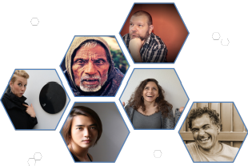
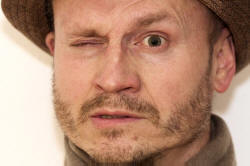

Humanism in English Language Teaching

This is a much written about area and it is one in which terminology is
even more variable than usual. You will sometimes see
reference to terms such as holistic, the whole person,
affective needs, self-actualisation and more. The water gets very
muddy indeed.
To make some initial sense, here's what's meant by some key terms:
- holistic
- The first use of this term according to Merriam-Webster's
site is from 1926. It means, according to that source:
relating to or concerned with wholes or with complete systems rather than with the analysis of, treatment of, or dissection into parts
holistic medicine attempts to treat both the mind and the body
holistic ecology views humans and the environment as a single system
(The term was originally employed by the South African General (later Field Marshall) Smuts.)
For our purposes, we can define this as focusing on the learner as a complete person rather than as a language-processing unit.
It can also mean treating the language as a whole rather than breaking it down into discrete areas but that is not, for the purposes of this guide, the relevant issue. - the whole person
- is a related concept and refers to the need, as some see it, to take into account the learners' emotional and personal lives when teaching.
- affective needs
- Affect, to distinguish it from effect, when used as a noun
means emotion or desire influencing behaviour. It is
derived from the verb meaning to change or alter in some way.
In lay terms, the verb means to move emotionally but also, unfortunately, to pretend or feign an attitude.
For our purposes, affect and affective needs refer to the learners' emotional responses to the classroom, the materials, their classmates, the teacher and so on as well as to their needs for reassurance, feelings of safety and an unthreatening environment.
The key idea is to overcome what has been termed lathophobic aphasia which is a neat term for keeping silent for fear of making a mistake. - self-actualisation
- is a term derived from the work of Abraham Maslow and dates from 1943. Maslow proposed his 'Hierarchy of Needs' and asserted that until needs at lower levels are satisfied, those at the next highest level can't be addressed. Levels 1 to 4 are described as 'deficit needs'. So, e.g., if you are hungry and in need of sleep, you can't focus on desires for self-esteem and so on. The highest level is that of self-actualisation: being all that you can be. More below on this source of humanist theory.
- humanism
- This term has a variety of definitions and referred
initially to a revival of interest in Ancient Greek and Roman
philosophy.
For our purposes, we'll take one of the Merriam-Webster definitions
a doctrine, attitude, or way of life centered on human interests or values; especially :a philosophy that usually rejects supernaturalism and stresses an individual's dignity and worth and capacity for self-realization through reason
Others have defined the concept in rather more sophisticated terms as, e.g.:
a philosophy of joyous service for the greater good of all humanity in this natural world and advocating the methods of reason, science, and democracy
Mehrgan 2102: 184
Humanistic teaching approaches draw on all these concepts to attempt to treat language teaching as more than learning a language but to extend it to helping learners develop and progress as people.
 |
Sources |
Maslow:
Abraham Maslow posited what he referred to as the Hierarchy of
Needs. It looks like this:

At the base of the pyramid are the simple physical needs for fresh
air, water, food, sleep and so on. The needs become more
sophisticated as one moves up the pyramid through safety and freedom
from fear, to a sense of belonging and mutual respect.
In particular, what are called esteem
needs (level 4) are critical to this. They include self-respect, reputation, status, feelings of
strength, independence, adequacy and importance to others.
In other words, high-level affective needs.
The implication is that feeling positive about yourself and
comfortable within your group leads to enhanced levels of
motivation and better learning.
Until levels 1 to 4 are met (the so-called deficit needs), level 5,
becoming all that you can be, cannot be achieved.
Carl Rogers |
|
| Source Wikipedia |
Humanistic approaches draw heavily on the work done by Carl
Rogers, an American psychologist concerned with a client-centred
approach to counselling.
A flavour of Rogers' concerns will suffice here. Having
briefly reviewed what happens in educational establishments in the
United States, Rogers avers:
... education becomes the futile attempt to
learn material which has no personal meaning.
Such learning involves the mind only. It is learning which takes
place from the neck up. It does not involve feelings or personal
meanings; it has no relevance for the whole person.
Rogers, 1969, pp. 3-4
Rogers goes on to posit 5 characteristics of what he calls significant learning:
- It personally involves the learner.
- It comes from within: significant learning is initiated by the learner.
- It makes a difference to the learner – changing the person in some way.
- It is evaluated by the learner to know if it is important.
- It is meaningful to the individual.
In summary, Rogers avers that:
a person learns significantly only those
things which he perceives as being involved in the maintenance of or
the enhancement of his own self
(op cit. p. 158)
What this means for teachers is also set out by Rogers. In summary, he believes that a teacher (Rogers prefers the term 'facilitator' or 'leader'):
- sets the tone for the group or class by trusting and being open.
- helps the learners to understand and articulate their own purposes as well as the purposes of the group as a whole.
- relies upon the learners attend to what has meaning for them as the motivation for significant learning.
- makes available the widest possible range of resources for learning.
- regards him / herself as a flexible resource to be used by the learners rather than an instructor.
- accepts both the content and the emotionalized attitudes of what is expressed by the learners.
- is able to be a participant in the learning process.
- shares feelings and thoughts personally in a non-authoritative manner.
- remains alert to the learners' feelings.
- recognizes and accepts personal limitations.
 |
Earl Stevick |
| Source Wikipedia |
Earl Stevick is another very influential voice in the campaign to humanise language instruction. He summarises the issue neatly into five overlapping emphases (1990):
- Feelings.
both personal emotion an aesthetic appreciation of the world. There is an explicit rejection of a focus on whatever makes people feel bad or interferes with aesthetic responses to reality. - Social relations.
Friendship and cooperation lie at the heart of the approach and it opposes whatever tends to hinder them. - Responsibility.
The acceptance of the need for scrutiny, criticism, and correction. - Intellect.
Knowledge, reasoning, and understanding are key aspects of all people. The approach opposes whatever interferes with the free exercise of the mind. - Self-actualization.
The approach encourages the full realization of one's own deepest true qualities.
From theory to practice |
One of the first authors to set out a handbook for teachers to
apply the principles of humanistic approaches to foreign language
learning was Gertrude Moskowitz.
In 1978, Moskowitz published Caring and Sharing in the Foreign
Language Classroom a severely practical book containing a range
of activities all intended to help learners feel positive about
themselves and others in the group. Her fundamental reasoning
was that
in both the humanistic psychological approach
and the communicative approach, learners are seen not so much as
full-time linguistic objects at whom language teaching is aimed, but
rather as human individuals whose personal dignity and integrity,
and the complexity of whose ideas, thoughts, needs, and sentiments,
should be respected. Foreign language teachers must contribute to
the self-actualizing process
(1978: p.109)
Here are some examples of the kinds of activities that she proposes, taken from a later (1982) paper but based on her 1978 book. She prefaces this with the following admonition:
People will share or self-disclose only if
they feel safe and not threatened by so doing. Therefore, a positive
and accepting climate is essential where others listen attentively,
non-judgementally, empathetically, and with good will. In keeping
with these notions, there are two important guidelines that I
strongly recommend when humanistic communication activities are
used: focus on the positive aspects and use low-risk activities. The
first refers to such things as sharing pleasant memories,
identifying one's strengths and those of others, and focusing on the
positive occurrences that happen to us each day. Conversely,
conversations would not deal with unpleasant memories, pointing out
what one considers to be one's own faults or those of others, or
dwelling on the negative events that happen to us.
(1982: pp25/26)
Childhood favourites
- Humanistic purposes:
- to recall pleasant childhood memories,
- to exchange these memories with others.
- Linguistic purposes:
- to practise nouns and possessive adjectives,
- to practise asking and answering questions,
- to practise the past tense(s).
- Levels: all levels.
- Size of groups: two.
- Materials needed: dittos with questions to be asked and answered.
- Procedures:
- begin the activity by
talking about childhood memories:
'We all have a number of childhood memories that made us happy in some way. As we get older, we tend not to think about them very much. Yet to do so helps us relive the good feelings we had at the time. 'Today we're going to recall some of our favourite things from childhood.
You will each have a handout listing some
categories and a partner to work with, someone you do not know very well yet.
The first person will ask the second person a question, such as 'when you were a child, what was your favourite candy?'
After the second person answers, that person asks the first person the same question.
Do the same with each question, rotating who answers the questions first.
Always start each question with the question 'when you were a child, what (who) was your favourite ..?"
'In some cases, your answers will be brief. For other questions, they will be longer. You can ask each other additional questions or make comments, if you wish.
As your partner answers, you will find other memories will come back to you.
When you finish all the questions on the handout, add some of your own categories to the list and take turns answering them.' - Pass out the ditto. If the students can handle it in the target language, tell them to add 'why?' after each question is asked.
- Here are some possible
categories that can be used:
WHEN YOU WERE A CHILD, WHAT (OR WHO) WAS YOUR FAVOURITE: Toy? Why?
Candy?
Holiday?
Play activity?
Book or story?
Place to go?
Song?
Outfit?
Comic strip?Friend? Why?
Grown-up (other than family)?
Teacher?
Relative (not a parent or guardian)?
Memory of snow?
Memory at a beach or pool?
Thing to do that was scary?
Birthday?
TV or radio programme? - When the exercise is completed, ask the students what their reactions this experience were and what they learned from it. They will often say that it was fun and made them feel good.
- Ask what other categories the groups thought of. The groups may wish to have a few more rounds based on the categories their classmates thought of.
- This seemingly simple activity creates a very pleasant atmosphere and smiles on students' faces as they recall happy times they have not consciously thought of for some time.
- begin the activity by
talking about childhood memories:
If you are intrigued by exercises like this and want more, the
full text, along with some interesting other papers, is available
at:
https://www.teachingenglish.org.uk/sites/teacheng/files/Y299%20ELT-08-screen_0-Humanistic-Approaches.pdf
Influences |
It is difficult to overestimate how influential humanist ideas have been over the past 40 or so years. All the following approaches (which are covered in a separate guide linked in the list of related guides at the end) have claimed to be humanistic:
- Community Language Learning: an approach explicitly based on counselling techniques.
- Suggestopaedia: an approach which explicitly attempts to lower affective barriers.
- The Silent Way: an approach which depends for much of its effect on learners' production rather than teacher intervention.
- Total Physical Response: which allows a pre-speaking phase in which learners are unthreatened by pressure to produce language.
- Dogme: an approach which explicitly targets the language produced by and needed by the learners and in which they initiate the teaching-learning cycle.
Whether all these alternative methodologies actually are operating in accordance with Stevick's five fundamental principles is, naturally, not uncontroversial.
There are other less obvious influences, too. It is arguable that all the following have, to some extent at least, been influenced by humanist theories.
- The concern, especially within Communicative Language Learning, to ensure that the language students use is personalised and meaningful to them.
- The explicit focus on most training courses on making lessons learner centred and reducing the dominance of the teacher.
- Krashen's and Terrell's focus in one of the former's five hypotheses regarding the need to reduce the learners' affective filters and create stress-free learning environments.
- The focus on negotiated syllabuses in which the learners play a central role in deciding what is to be learned.
- The focus on developing autonomy and self-directed learning programmes.
- Genre approaches with their emphasis on empowering learners socially.
- Approaches to reading skills development which focus on the learners' affective response to the content of texts as well as their linguistic content.
- The focus on project work in which the learners set their own goals.
- The increasing focus on how cultural aspects affect what is done in the classroom and underlie learners' reactions to certain methodologies and approaches.
- The focus on exploiting both the physical environment for context as well as the learners' internal, experiential environment.
You may have thought of others.
One overarching influence is that it is nowadays rare to find a teacher who does not profess to the desire to establish a good rapport with her learners (i.e. empathise) or one who see his learners' feelings, desires aesthetic responses and emotions as irrelevant to the learning process.
|  |
Criticisms |
The major criticism of humanistic approaches to language teaching
concerns the doctrinaire approach that many proponents take.
It has not gone unnoticed that many who advocate a humanist approach
(and some who merely advocate a communicative approach) have focused
on peripheral matters which do not enhance the learning
opportunities of their students.
While it is generally accepted that the comfort and happiness of
learners in the classroom is significant, critics of humanistic
approaches have suggested (sometimes forcefully) that a focus on
these sorts of factors diverts attention from the purpose of a
language-learning classroom which is, naturally, to help people to
speak, write, read and listen effectively in a foreign language.
In particular, criticisms have been levelled at:
- Negotiated syllabuses
because most learners have no idea of what they need to learn and it is the teacher's and institution's responsibility to use their knowledge, training and experience to establish a syllabus that will allow the client to learn what he or she really needs.
At advanced levels in particular fields of language use, the learners may indeed be in a position to set out what they need to learn but this does not describe most learners. - Skills work
because most adult learners already have reading, writing, listening and speaking skills. What they need is the ability to use the skills in another language. They do not explicitly need to be taught skills which have nothing specifically to do with a language because they already have skills which are specific to all languages. - Inductive approaches
because trying to figure out a rule from a set of data is an unreliable and time-consuming process especially when one considers that generations of linguists have struggled to identify the rules. Asking a student of the language to do this is not only inefficient and wasteful, it is also likely to fail. - Concerns with affective factors
because, providing the teacher is approachable, friendly, professional and concerned and remembers the learners names, that is all most learners need. - Arrogance
There is some suspicion that teachers, whose central role is one of service to their learners, may arrogate to themselves the role of life coach and that is a domain in which they may neither be trained nor have sufficient expertise. - Concerns with holistic approaches
because if a learners feels a need for some counselling and whole-person treatment then the obvious choice is to go to a professional in this field, not to a language teacher. - Concerns with process not product
because what most language learners want is precisely the product and they are far less concerned than teachers with how they get it.
| Related guides | |
| motivation | for a little more on Maslow and some alternative theories of motivation |
| alternative methodologies | for more on the five sets of ideas touched on above |
| Krashen and the Natural Approach | for more on affective filter theory |
| first- and second-language acquisition theories | for more on how language(s) may be learned |
| methodology | the link to other guides in the methodology index |
| background | the link to the guides in the background section |
References:
Mehrgan, K, 2012, Humanistic Language Teaching: A Critical Look,
Masjed Soleiman, Iran: Islamic Azad University
Merriam-Webster online dictionary: https://www.merriam-webster.com
Moskowitz, G, 1978, Caring and Sharing in the Foreign Language
Classroom, Rowley, MA: Newbury House
Moskowitz, G, 1982, Self-confidence through Self-disclosure: the
pursuit of meaningful communication, in ELT Documents 113
Humanistic approaches: an empirical view, London: The British Council
Rogers, C,1983, Freedom to learn for the 80's, Columbus,
Ohio: Charles E.
Merrill Publishing Co.
Stevick, EW, 1990, Humanism in Language Teaching: A critical
perspective, Oxford: Oxford University Press